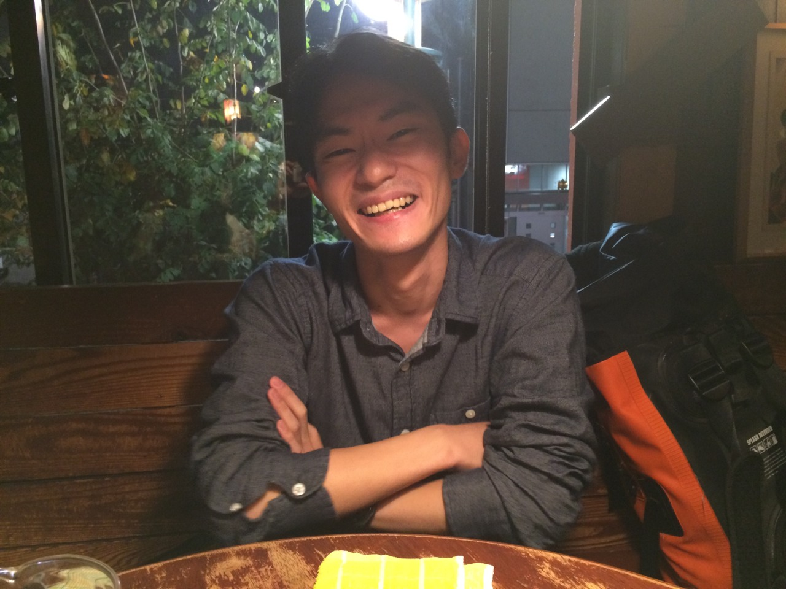
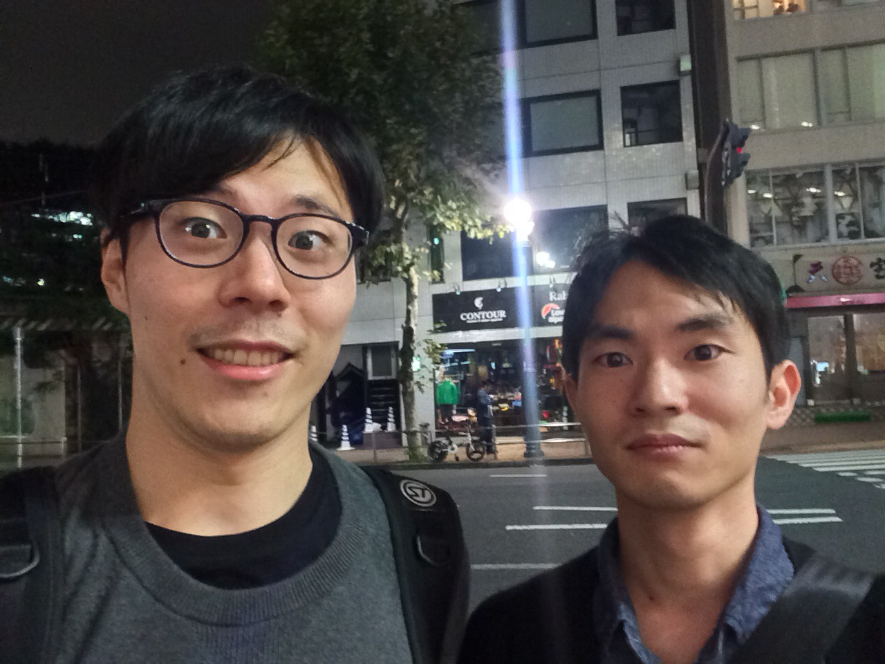
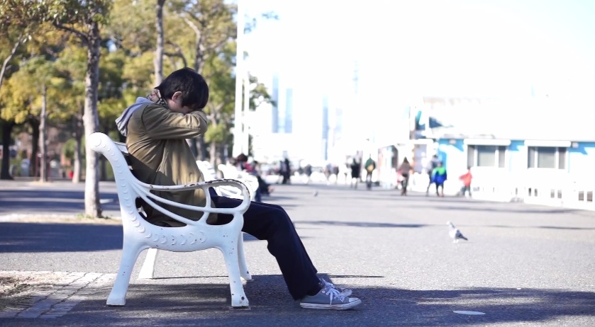
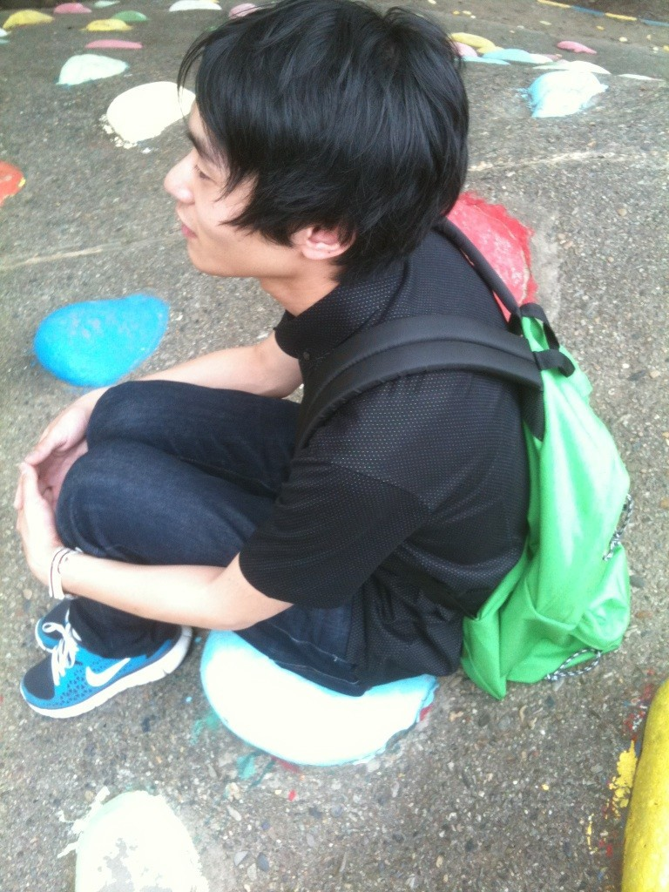

監督Interview
"anauzu"グルグルインタビュー 内田圭
『出された依頼にどう答えるかっていう”大喜利感”があるからすごく楽しいね。』(内田)
さわいかん（以下さわい）：まずは圭くんの自己紹介からお願いします！
内田圭（以下内田）：はい！本職はグラフィックデザイナーをやっております。今はデザイン事務所に入っていて、空いた時間で演劇関係のチラシやロゴなどのグラフィックや、映像関係のことをしています。
さわい：あれですよね？ドリフターズ・サマースクールに関わってましたよね？
内田：そうそう。金巻君（"yo a ke"MV監督)も知り合いで。
マッキーもデロンに関わってる！知り合いばっかりだ！って思って（笑）
さわい：そうですよね！金巻さんもドリフターズだ！（笑）
内田：ドリフターズ・サマースクールでは金巻君はダンサーで、おれはマネージメントと広報をする宣伝製作コースにいてチラシを作ったりしてた。
さわい：ヨネエリ（"DODODO"MV出演ダンスユニット)もドリフですよね？
内田：そうだね。１期か２期か忘れちゃったけど、おれは３期だった。
さわい：圭くんの本職的な話をすると、どのような事を主にやっているんですか？
内田：仕事の方はデザイン事務所に所属してるんで、最近だと美術展周りのチラシやカタログを製作してるね。フリーとしてもデザインの仕事を受けてて、今回のPV製作に協力してくれた柳生二千翔（やぎゅうにちか）君が主宰をしている"女の子には内緒"のデザイン全般を手伝ってます。あと、ヨネエリのロゴやチラシも作ってます。
さわい：映像に関してはどんな感じなんですか？
内田：映像っていうのはガッツリ関わったことはなかったけど、学生の頃に所属していたムサビの演劇サークルが、舞台や美術にすごく力を入れるところだったから、そのときに舞台に投影する映像が必要で創っていたりはしていたね。だから、グラフィックも映像も演劇ありきだね。
さわい：へー！演劇があったからグラフィックも映像もっていうのは初めてのパターンです！（笑）
内田：あとは、大学１年生のときに何かしら使うだろうと、アドビのソフトを買っちゃって。もったいないし使えるんなら使わなきゃって思って色々手を出しちゃった。っていう感じ（笑）
さわい：うーん、アドビあるある！去年、何人かのクリエイターと共同でZINE("線と点と文の同人誌、センテンス")を作ってましたよね？
すごく欲しかったんですけど結局手に入れれずじまいなんですが。ただ、ウェブで収録作品を少しだけ閲覧できるようになってたんで見たんですよ。圭くん、紋章みたいなのを描いてましたよね？
内田：そう、エンブレム！あの本は、大学の同期の大竹竜平君が「ZINEを作りたい」って知り合いに声を掛けて作ったというので。他の子は、イラストとか文章とかを掲載したんだけど。おれは自分で表現したいっていう作家性が無い方だから「どうしようかなー」ってなったんだけど、エンブレムとかそういう幾何学的なものの集まりが好きだったから、それでやったっていう感じ。
さわい：はたから見てて、「おもしろいなーいいなー」って思ってました（笑）
内田：すごいおもしろかったよ！ああいう仕事来ないかな？（笑）
さわい：ははははははは！グラフィックデザイナーっていうのは、どうなんですか？仕事として。
内田：グラフィックデザインって、個性を出すことをあんまりするようなメディアではないと思う。でも、出された依頼にどう答えるかっていう”大喜利感”があるからすごく楽しいね。今回の"anauzu"もそのような感覚で作ったね。

『目には見えないものを構築することも「デザイン」の一つの形だと思ってます。』(さわい)
さわい：ところで、どうしてグラフィックデザイナーになろうと思ったんですか？
内田：さっきもちょっと話したんだけど、「自分で何かを表現したい」という意識がそこまで強くないんだよね。でも、大学に入って芝居を始めて、、、結局芝居なんだけど（笑）そこで自分が将来的に芝居と繋がることのできるのはデザインだなーって思ったってのがあるかな。
さわい：不思議ですね（笑）じゃあもう少し遡ってお話を聞いても良いですか？そもそもどうしてデザイン学科に入ろうと思ったんですか？他にも大学って選択肢があるじゃないですか。
内田：元々の初期衝動としては、インテリアデザイナーになりたかったんだよね。中学生くらいの時に引っ越しをして、そのときに新調した家具がデザイン家具で。アントチェアっていう蟻の形をしている椅子があって、「家具ってデザインしていいんだ！」って気付いたんだよね。絵を描いたり、モノを作るのは好きだったから、「家具をデザインしたい！」って思うようになった。あとは、高校のときの文化祭のパンフレットを作ったことも影響してると思う。結構しっかりしたパンフレットを、学生が作るというのが習わしで、デザインをできる人がいなかったし、おもしろそうだからやろう！って思って製作チームに入ってパンフレットを１から作った。初めてそこでグラフィックデザインをやったと思うな。イラストレーターを初めて独学で触って、「グラフィックデザインっていう仕事もあるんだ」って気付いたね。そのときから割とグラフィックデザインに絞ってたなぁ。初めは家具だったけど、パソコンを使うことの方が性に合うなと思ったし、モノのデザインよりも、紙面のデザインをするほうが向いてるなと。そこからデザインを勉強をして、ムサビに入ったという感じかな。
さわい：「色んなものがデザインされている」という気付きはおもしろいですね。個人的には、曲作りやMV製作もアートワークも「デザイン」なんですけど、目には見えないものを構築することも「デザイン」の一つの形だと思ってます。音楽家としてのデザイン、プロデューサーとしてのデザイン、思想家としてのデザイン。色々あるとは思うんですけど、僕は「デザイン」という言葉をもっともっと拡張解釈していくことがこれからのバンドの新しい形作りに繋がると思ってますね。
内田：それは大事だね。

『ちょっとしたことで変わる「行き先」があるんだよ、という形のドラマにしようと思った。』（内田）
さわい：ではここから"anauzu"のミュージックビデオについての話に入ろうと思います。
内田：この依頼をもらったときに、「暗い曲なんですけど…」って言われて。「暗い曲かー！！（笑）」って思ったんだよね。ヨネエリの"嗜好品"のときの映像を見てくれてお願いしてくれたんだっけ？
さわい：元々は、圭くんのモーショングラフィックのGIFを見て、すんごいスタイリッシュでめちゃくちゃトキメイたんですよ！そこで、モーショングラフィックを込みにしたミュージックビデオを作って欲しいなって思ったんです。
内田：なるほどね。暗い曲って聞いてたから、モーショングラフィックだけで持たせるのは無理かなと思って、ドラマとモーショングラフィックを混ぜようと思ったんだよね。で、曲の歌詞とラフミックスをもらって、聴いたときに、読み込みマークのグルグルと"anauzu"のグルグルが「思考停止」や「停滞感」のようなキーワードにパリっと自分の中で一致したんだよね。それをベースにドラマを考えようと。
さわい：なるほど。完全にぼくは、冒頭の読み込みマークに騙されました（笑）
内田：もうあれがしたかったんだよね！！（笑）で、話しを戻すと。「思考停止」して行ってしまう先と、何かが変わって別のところに行くというパターンが浮かんで、ちょっとしたことで変わる「行き先」があるんだよ、という形のドラマにしようと思った。「読み込みマークと、２重３重のタイムラインになっているドラマにしたい。」というのを、柳生君（女の子には内緒）に伝えてストーリーを考えてもらったんだよね。
さわい：そうですよね。"anauzu"のMVでは、柳生君に原作的なポジションで関わってもらってますよね。
内田：彼は色々とお話を考えるのが好きだし、そもそも１人で製作するつもりでもなかったから、柳生君にお話をお願いして、おれはディレクションしていくという形にしたんだよね。でも、現実的な問題で、柳生君が考えてくれたお話をそぎ落としてそぎ落としてという形で最終的には作ったけどね。
さわい：ストーリーに関しては、ちょっとしたSFみたいな不思議な展開で、引き込まれましたね。
内田：いまのスキル的にあんまりかっこ良すぎるものは作れないと思って、そこで「世にも奇妙な物語」的なものを作ろうって結果に至ったんだよね。あるようなないような。みたいな。SFともとれるし、なんだろな？みたいな（笑）
さわい：突飛ですけど、「攻殻機動隊」を思い出しました。
内田：あー！笑い男みたいなね！ベタにアニメからも大きく影響受けてると思う。
さわい：事前に途中経過も知らなかったので、どのようにモーショングラフィックがドラマとマッチするのか？と思っていたのですが、ふたを開けてみたら、おもしろいっす！！！！
内田：ありがとうございます！
さわい：これまでのMVプロジェクトの中で、ここまでドラマ性のある作品は無かったので新鮮でしたし、藤子不二雄的「SF（少し不思議）」感が気持ちイイっす！

"anauzu" MVより
『音楽だけで止まって欲しくはないかな！デロンでドラマ作ってよ（笑）』（内田）
さわい：最後の質問になるんですけど、「deronderonderonはこうなってほしい！」というのはありますか？
内田：音楽だけで止まって欲しくはないかな！デロンでドラマ作ってよ（笑）
広がりのある新しいバンドを確立して欲しいな。バンドはもっと色々できるはずだしね！
さわい：ぼくはデザイナーとしてやっていきますよ（キリッ！
内田：デザイナーだね（笑）
さわい：という訳で、このあたりでお開きとさせて頂きます。ありがとうございました！
内田：ありがとうございました！
内田 圭 ウチダケイ
グラフィックデザイナー。
武蔵野美術大学卒。
1988年東京生まれ。
デザイン事務所に勤務しつつ、フリーでもグラフィックデザイナーとして活動。
演劇やダンスなどの舞台作品にてグラフィックデザインのほかに映像効果も手がける。
最近は 女の子には内緒、ヨネエリ、チーム夜営などの舞台公演に参加。
http://kptworks.tumblr.com/

"anauzu" MV
出演：サエト 伊藤彩香
ストーリー原案：柳生二千翔（女の子には内緒）
監督：内田 圭